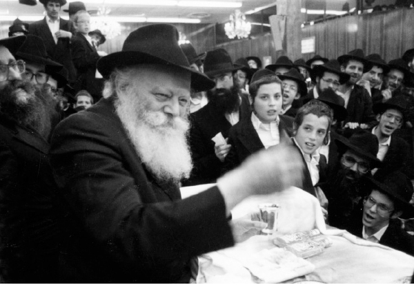

מנחם זיגלבוים
ארבעים ושמונה השעות של שמיני עצרת ושמחת תורה, הם ימי ‘שיא’, ימי ‘ירח האיתנים’, כאשר הרבי העלה את החסידים לגבהים ורומם אותם בשליבות סולם השמחה • בארבעים ושמונה שעות אלו לא טעמו החסידים טעם של אוכל, ואף שינה כדי קיום בלבד • מנחם זיגלבוים הציץ ביומנים שנכתבו בשנים קודמות וניסה לשחזר בצורה חלקית את אותם
ארבעים ושמונה השעות של שמיני עצרת ושמחת תורה, הם ימי ‘שיא’, ימי ‘ירח האיתנים’, כאשר הרבי העלה את החסידים לגבהים ורומם אותם בשליבות סולם השמחה • בארבעים ושמונה שעות אלו לא טעמו החסידים טעם של אוכל, ואף שינה כדי קיום בלבד • מנחם זיגלבוים הציץ ביומנים שנכתבו בשנים קודמות וניסה לשחזר בצורה חלקית את אותם שני ימים שהיוו את ‘פנינת הכתר’ בשנה כולה, בליובאוויטש של הדור השביעי

שמיני עצרת ושמחת תורה – ארבעים ושמונה שעות אלו ימים שבהם “לא טעמו טעם שינה”. למי בכלל היה זמן לחשוב על צרכים ורצונות גשמיים כאשר האטמוספירה הייתה בבחינת ‘לגעת בשמים’. בעצמותה של מידת השמחה. לא היה פנאי גם לצרכים המינימליים כמו אוכל ושינה הגונה. כבר מהרגע שבו נכנס הרבי לבית הכנסת לתפילת ערבית של שמיני עצרת, כשהניף ידו בעוז לעידוד השמחה ולהעצמתה, היה ברור ששמיני עצרת ושמחת תורה אינם עוד סתם זמן; הרבה מעל גם לשבעת ימי השמחה של “ושמחת בחגך”.
“חוויה מיוחדת במינה אצל כ”ק אדמו”ר שליט”א, אשר אפילו רק בגללה בלבד כדאי הוא וחשוב לנסוע כדי להסתופף בצילא דמהימנותא, הם ימי שמיני עצרת ושמחת תורה, אשר בהם מרגישים ורואים את השמחה, שאפשר גם למששה בידיים, וכולם טובלים בים של שמחה, קדושה וטהרה”, מסכם זאת יפה אחד התמימים ביומנו.
הרבי הוא ה”אושפיז”
מאז ומתמיד תפס ותופס חג שמחת תורה מקום נכבד ביותר, אולי מרכזי, במשנתו של הרבי מה”מ ובהמחשתה המעשית. שמחת תורה הוא, ראשית כל, החג שבו שמחים במיוחד עם התורה הקדושה. והעיקר – השמחה שבתורה, שמחת בני ישראל עם החמדה הגנוזה שקיבלו מהקב”ה, אינה בפלפול שבתורה או בבחינה כלשהי בתורה השייכת ליחידי סגולה. השמחה היא – בעצם התורה כמו שהיא, גם מבלי שהיא מובנת ומושגת, כפי שניתנה ושייכת לכל אחד ואחד מבני ישראל, בכל מצב רוחני בו הוא שרוי.
לפיכך הדגש הוא על הריקוד, פעולה המתבצעת ברגלים, ולא בראש… הריקוד הוא עם ספר תורה העטוף במעילו, ולא פתוח לקריאה ולימוד… הריקוד מקיף במעגלי מחול את הכל, תלמידי חכמים ופשוטים, הרוקדים יד על יד, כתף אל כתף. לאמור: חג שמחת תורה הוא חג השמחה בתורה, אך לא פחות מזה חג השמחה בעם ישראל!
נוהג אפוא תמיד כ”ק אדמו”ר מה”מ עוד מגיל צעיר לרקוד בלי הרף כמעט בכל שעות היממה של שמחת תורה, לרקוד ולהרקיד אתו באהבה ובשמחה יהודים נוספים, למדנים ופשוטי עם כאחד.
זאת ועוד, מקובל בשם רבותינו הקדושים כי ישנם “אושפיזין חסידיים”. כלומר: במקביל לאושפיזין המפורסמים, האבות הקדושים שכל יום מימי חג הסוכות מוקדש לכל אחד מהם לפי הסדר הידוע, אברהם ביום הראשון ויצחק ביום השני וכו’, קיימים גם האושפיזין של נשיאי החסידות. ביום א’ דסוכות – הבעל שם טוב הק’, ביום ב’ דסוכות – המגיד ממעזריטש, ביום ג’ דסוכות – אדמו”ר הזקן וכך הלאה. לפי זה יוצא שבשמיני עצרת חל יום חגו של הרבי הריי”צ (דבר המוסבר בהרחבה במשנתו של הרבי), וכהמשך טבעי – חג שמחת תורה הוא חגו של הרבי מה”מ, התשיעי בשרשרת הזהב שראשיתה בבעש”ט הקדוש! הרבי בעצמו התייחס לשייכותו ליום שמחת תורה, בשיחת ליל שמחת תורה תשמ”ח.
לאורך עשרות שנים – שמחת תורה הוא החג אשר חגיגתו בליובאוויטש, בחצר הרבי, מהווה חוויה בל תישכח להמוני המשתתפים בה. ככל שנוהרים יהודים לליובאוויטש במשך כל ימות השנה כדי להתבשם מאווירתה וליהנות מאורה – הרי לשמחת תורה נוהרים רבבות יהודים, כן ירבו, השואבים שפע רב של תורה, דברי תורה ושמחת התורה, ומשביעים את נפשם שובע רוחני לאין שיעור.
כבר בשמחת תורה של שנת תרפ”ח, בבית מדרשו של הגאון הצדיק המקובל רבי לוי יצחק שניאורסאהן ז”ל, רבה הגדול של יקטרינוסלב – נטל הרבי את שרביט הריקודים, כאשר בנו בכורו של הרב דמתא, חביבו וחביב הקהילה כולה, החדיר בכל כוחו שמחה רבה, שמחת תורה אמיתית, בנפשות כל הנוכחים, כמי שמטעינם מטען גדוש העשוי לשמש צידה לדרך ארוכה בת שנים רבות…
גם כאשר אביו חדל מריקודו, מחמת עייפותו, המשיך בנו הרבי ורקד כמעט כל שעות היממה, ושילב בשמחה את כל בני העיר, גדולים וקטנים כאחד, והשמחה גרפה אתה גם אנשים זרים. היתה זו שמחה גדולה שנחרתה בזכרון שנים רבות. באופן ברור וגלוי נראתה ובלטה השמחה הכפולה ההדדית: שמחת הקב”ה בעם ישראל, “ישמח ה’ במעשיו” ושמחת בני ישראל בהקב”ה – “ישמח ישראל בעושיו”.
בשנים שבהן העלים הרבי את עצמו כאברך מן המניין, על אף שכבר היה ידוע כ”חתנא דבי נשיאה”, ועשה כל פעולה אפשרית כדי להסתיר את גדלותו האמיתית – הרי שדומה כי שמחת תורה היה היום היחיד שבו הרבי “קילף” מעצמו את שכבות ההסתר וגילה טפח מעוז קדשו.
שנה מסוימת מתוך אותן שנות בדידות, נשאר הרבי בפאריז בשמחת תורה, לאחר שלא היה באפשרותו לנסוע, כמנהגו, לחצרו של חמיו הרבי הריי”צ נ”ע. טעמו של אותו שמחת תורה היה זכור עוד שנים רבות לתושבי ה”פלעצל” בפאריז. רבים נהרו אל בית-הכנסת במספר 25, שם קיים הרבי את ההקפות במשך כמעט כל שעות היום. כמה מהמשתתפים סיפרו, כי זכור היה להם במיוחד ריקוד שנמשך שלוש שעות רצופות עם הניגון “על הסלע הך”. הרבי ניגן אותו ויחד עם זאת הרקיד ושיתף את עשרות המתפללים שרקדו עד כלות כוחם. בעוד ציבור הרוקדים התחלף לסירוגין, המשיך הרבי לרקוד כל העת.
מקרה מרתק אחד שאירע באותן שנים, שנת תרח”צ, סיפר החסיד רבי צבי הירש פוקס: “הרבי הריי”צ היה נוהג לרקוד בהקפות עם שלושת חתניו בהקפה ראשונה סיבובים אחדים, ולאחר מכן היה חוזר לשבת (או לעמוד) ליד הסטנדר, בעוד שחתניו היו ממשיכים לרקוד. בחדר הסמוך היו עומדים תלמידי הישיבה ומביטים ברוקדים.
“באותה שנה, לאחר שהרבי הריי”צ חזר למקומו, יצא הרבי מהחדר המרכזי והלך לרקוד עם הבחורים בחדר השני.
“בעיצומו של הריקוד, כאשר שלהבת אש קודש מרקדת בחלל האויר, נזרקו מפי קודשו דיבורים לאחדים מן הרוקדים. אני הצלחתי להאזין לקטעים אחדים. “לבחור אחד מריגא טפח על שכמו ואמר בניגון מיוחד: ‘פעם היה הסדר ‘קשוט עצמך ואחר כך קשוט אחרים’ לא כן עתה, יש למהר, לצחצח את הכפתורים (“צופוצען די קנעפלאך”), משיח עומד לבוא’.
“לבחור נוסף, שאביו שימש כשו”ב פנה ואמר: “אביך משמש כשוחט. עליך, איפוא, לשחוט את היצר הרע”.
סדר זה לא השתנה גם לאחר שהרבי הגיע צלחה לחוף מבטחים בארצות הברית, שם פעל תחת צילו של חמיו הרבי, אך עדיין הסתיר ככל האפשר את גדלותו הרוחנית – הרי שבשמחת תורה הכול היה שונה.
סיפר הרב יהודה לייב גרונר, מזכירו של הרבי: “לפני הנשיאות היה הרבי רוקד בליל שמחת תורה ברציפות מהשעה עשר בלילה ועד השעה שבע בבוקר. הדבר היה לפלא, שכן אף אחד מהמשתתפים בריקודים לא היה מסוגל לרקוד זמן כה רב. אלה שרקדו היו מפסיקים מדי פעם כדי לנוח, אך הרבי המשיך לרקוד בהתלהבות עצומה ללא הפסק.
“באחת השנים ירד מישהו מבית כ”ק אדמו”ר הריי”צ נ”ע ואמר כי הריקודים גורמים רעש בבית הרבי. מישהו ניגש לרבי ולחש לאזנו את הדברים הללו. הרבי חלץ אפוא את נעליו, והמשיך לרקוד במשך כל הלילה כשהוא לוחש בנגינה ‘שא שא שא’…”
בלילה הזה נפתח פתח הישועות
הכול התעצם ביתר שאת לאחר שהרבי עלה על כס הנשיאות וקיבל את שרביט ההנהגה – או אז יום שמחת תורה קיבל תנופה אדירה בכל הקשור לשמחה הפורצת דרך הרגליים כל מחיצה והגבלה, גשמית ורוחנית. היום הזה הפך ליום המרכזי של חסידי חב”ד בדור השביעי. גם שלוחים שנמנעו לעזוב את מקום שליחותם בימים הנוראים ובימי “זמן שמחתנו” עשו הכול כדי שלפחות לארבעים ושמונה השעות הללו, יוכלו להגיע לרבי. רבים מהם אף הביאו את מקורביהם מתוך ידיעה כי מי שיטעם טעמה של ליובאוויטש בשמחת תורה – לא ישכח זאת כל חייו!
שמיני עצרת ושמחת תורה היו ימים שבהם היו גילויים רבים, הן מצד השמחה, הן מצד הריקודים. הן מצד זה שלא טעמו טעם גשמיות כלל ועיקר, כאשר כל סעודות החג היו נחטפות בשעת לילה מאוחרת כלאחר יד; והן בסגנון ההתוועדויות שהתקיימו בימים אלה – התוועדויות שבהן הסגנון היה שונה מאשר בכל שאר ימות השנה.
כבר בשמחת תורה הראשון שלאחר קבלת ההנהגה – שמחת תורה תשי”ב – היו ‘גילויים’ מיוחדים. היה זה לאחר שההקפות הרשמיות ב-770 כבר הסתיימו והרבי נכנס לחדרו הקדוש. והנה, כשעה לאחר חצות לילה, נכנס הרבי שוב לבית המדרש וציווה להכריז “מען וועט פראווען איצטער נאך א מאל הקפות [= כעת נעשה שוב הקפות]!”
אין אתנו יודע עד מה, אבל נראה היה שהרבי מיאן להיפרד מהשמחה והריקודים, וביקש להוציא אותם מתחום השעות ‘הרשמי’ של התפילה. ובאחת וחצי בלילה נפתחה אפוא השמחה מחדש…
מיד לאחר מכן הכריז הרבי שכל מי שלא אמר פסוקים בהקפות הקודמות יאמר עתה וכל מי שלא היה קודם בהקפה, ילך עתה.
לאחד הנוכחים – שהיה זקוק לישועה גדולה – הורה שיאמר את הפסוק “לעושה נפלאות גדולות” ושאל אותו אם הוא מאמין שעוד בלילה זה תהיה לו הישועה שהוא צריך, והלה פרץ בבכי. הרבי ציווהו לומר עוד הפעם ובחוזקה, ושאל בקול “אתה כבר מאמין שעוד הלילה יהיו הנפלאות הגדולות?” וכך כמה פעמים ציווה אותו לומר הפסוק עד שאמר כמדבר אל עצמו: “בסדר, ער גלויבט שוין” [= הוא כבר מאמין].
את הפסוק “ויהי בנסוע” ציווה לתלמידי התמימים שיאמרו, ולאחר שאמרו אמר שיאמרו בחוזק יותר כי אין זה מספיק, וכשאמרו פעם שנייה אמר: “זה עדיין לא זה, שיאמרו עוד פעם ואמרו פעם שלישית ואמר “זה עדיין לא זה, אבל שלוש פעמים זה כבר חזקה”, וכשאמרו “אתה הראת” בפעם השניה והגיעו לפסוק זה, שוב ציווה שתלמידי התמימים יאמרו אותו ואמר “זה כבר בדרך”…
החסידים הבינו היטב כי הרבי מנסה בלילה קדוש זה, לשבור מחיצות שמיים – – –
הרגעים הנעלים
כאמור, כבר מהרגע בו נכנס הרבי לבית המדרש לתפילת ערבית של ליל שמיני עצרת, מניף הרבי את ידו בעוז ובעצמה להגברת השמחה. התפילה עצמה הייתה באווירה של שמחה נעלית.
לאחר התפילה הרבי חוזר לחדרו הקדוש ושאר המתפללים היו הולכים לערוך קידוש בביתם. רק בשעה מאוחרת היו חוזרים כולם לסדר ההקפות, כאשר הרבי נכנס שוב לבית המדרש ומתחיל בסדר ההקפות.
שיא הימים הללו הוא בעת ההקפות. שלוש פעמים נערכו הקפות ביומיים אלה – בליל שמיני עצרת, בליל שמחת תורה ולמחרתו. בימה מיוחדת הותקנה לרבי בה עמד במהלך ההקפות, החל מפסוקי “אתה הראית”. פעמים רבות שהרבי עצמו ניצח על אמירת הפסוקים, מרקיד את כולם, מוחה כפיו בעוצמה תוך כדי שהוא מסתובב אל כל אחד ואחד מאלפי החסידים שממלאים את בית המדרש מקצה לקצה.
מיד עם כניסתו, עוד לפני אמירת הפסוק הראשון של “אתה הראית”, הרבי פוצח ב”מנת קדימה” של שירה בעוד הרבי מנצח על השירה.
בשלב זה בליל שמחת תורה – היו מנהלי ישיבת תומכי תמימים מוכרים את פסוקי “אתה הראית” לכל המרבה במחיר. קל להבין כי המחירים לא היו שווים לכל נפש, והיו נמכרים לאנשים שפתחו את לבם וכיסם והוזילו ממון רב עבור הכיבוד, לטובת מוסדותיו הקדושים של הרבי.
בכל שנה מכובד הרבי לומר את כל פסוקי אתה הראת הראשון ולפתוח ולומר את הפסוק הראשון והאחרון של סדר “אתה הראית” השני והשלישי, כאשר אחרי כל סיום של הפסוקים הוא מתחיל בניגון. גם כיום הזה, כאשר עינינו לא רואות ואוזננו לא שומעות, מכובד הרבי באמירת פסוקים אלו – כך ב-770 וכך ברבים-רבים מבתי כנסת חב”ד ברחבי העולם כולו.
פסוקי “אתה הראית” בשנת תשמ”ח, זכורים באופן מיוחד. יומן מהימים ההם מתאר:
“כנהוג כובד כ”ק אדמו”ר שליט”א באמירת כל פסוקי ה”אתה הראית” וכן בפסוק הראשון והאחרון בשתי הפעמים הנוספות של אמירת ה’אתה הראית’. בסיום הפעם הראשונה פנה הרבי שליט”א לעבר הקהל והחל לנגן את ניגון השמחה הידוע בהלהיבו את השירה במחיאות כפיים קצביות משך זמן. בסיום הפעם השניה התחיל הרבי שליט”א לשיר “על הסלע הך”… לפני אמירת הפסוק “כי מציון” בפעם השלישית פנה כ”ק אדמו”ר שליט”א לכיוון הרש”ג ובירר האם יוכל ללכת להקפות. הרש”ג ענה בשלילה ואז אמר הרבי שליט”א את הפסוק האחרון ותיכף הסתובב כ”ק אדמו”ר שליט”א שוב אל הקהל והחל בניגון השמחה כשהוא מלהיב את השירה במרץ לא רגיל, וכך במשך כרבע שעה!
“כאן כבר החלה השמחה להרקיע שחקים… הרבי שליט”א הסתובב לכל העברים וכל פירמידה זכתה ליחס מיוחד. כמו כן עודד הרבי בתנועות חזקות אנשים מסויימים, באופן מיוחד הביט הרבי על הזקנים שעמדו למרגלות הבימה ופניו קרנו בשמחה גדולה ועצומה. היו אף ניגונים שכ”ק אדמו”ר שליט”א השתתף בהם בפיו וכן כל מיני תנועות מיוחדות ומענינות שהרבי שליט”א השתמש בהם: בעיצומה של השירה השעין הרבי שליט”א את ראשו על ידו כמי שנח וכשחיוך רחב על שפתיו רמז בכך לכמה אנשים (בהמשיכו בתנועה זו בתנועות ראש קלות) שיתעוררו… בהביטו לעבר הרב יעקב יהודה העכט משך הרבי שליט”א במגבעתו. לכמה אנשים סימן כ”ק אדמו”ר שליט”א בתנועות תמיהה על כך שאינם שרים ואחר כך עשה ביד תנועת ביטול. לד”ר ווייס סימן הרבי שליט”א בחיוך רחב, למדוד את הדופק…”
מגיע זמן ההקפות. הרבי עצמו מתכבד בהקפה הראשונה ובהקפה השביעית. יחד עם הרבי היו ניגשים עוד כמה מזקני החסידים והנכבדים שהיו נושאים ספר תורה בידם – אך מיד עם תום ההקפה ותחילת השירה, הם היו מוצאים זווית נסתרת, והרבי במרכז בית המדרש היה עומד עם ספר התורה בידיו ורוקד יחד עם גיסו הרש”ג. “יחד עם גיסו שליט”א רוקד הוא באמצע אולם בית המדרש הגדול למטה, וכל הקהל עומד מסביבם רואה ומביט על פני קדש הקדשים מנהיג הדור, משה רבינו ממש של הדור, הוא כ”ק אדמו”ר שליט”א, ואינו נלאה ואינו מתעייף אפילו שיעמוד כל אותו הלילה בלי הפסק. דומה שהזמן עומד בבית ליובאוויטש וכל הנוכחים הם למעלה מהזמן”, כותב הרב אפרים ירחמיאל הלפרין ביומנו משנת תשכ”ב.
מאז שנת תשמ”ח הרבי לבדו היה רוקד במרכז המעגל כשהוא מניף את ספר התורה בעוז למעלה ולמטה, בעוד אלפי החסידים מחרים ומחזיקים בעוז בקול שירה אדירה שעולה ובוקעת גבוה מעל גבוה.
הניגון היה תמיד ניגון ההפקות הידוע, ניגון עוצמתי סוחף ומרומם.
וכך מתוארת ההקפה הראשונה בשנת תשמ”ח שהייתה מיוחדת ושמחה במיוחד: “כ”ק אדמו”ר שליט”א אחז את ספר התורה באמצעו והחל מנענעו קלות מצד אל צד תוך שהוא מסתובב על המקום באיטיות ומתבונן לכל הכיוונים. מרגע לרגע הגביר כ”ק אדמו”ר שליט”א את קצב התנועות בידיו הק’ עד שבאמצע הניף את ספר התורה הק’ ימינה ושמאלה והשמחה היתה “עד לב השמים”… אחר כך עצר כ”ק אדמו”ר שליט”א נישק את ספר התורה ובזאת הסתיימה ההקפה. הרבי שליט”א חזר למקומו. בחזרתו צעק הקהל בהתרגשות רבה “יחי אדוננו מורנו ורבינו” ושרו תהא שנת חירות משיח לעידודו הנמרץ של הרבי שליט”א. אחר כך, התקיימו שאר ההקפות אף הן בשמחה רבה ועצומה”
רבים היו מנצלים את הרגעים הבודדים הללו שבהם הרבי הלך מבימתו אל בימת ההקפות ובחזרה, רגעי השמחה הנעלים, כדי לבקש מהרבי ברכות. חסידים רבים ידעו כי דקות אלו הן דקות של ‘עת רצון’ נעלית, והיו עושים כל מאמץ כדי לפלס דרך בין האלפים, להגיע לרבי, ובעת שהיה מאפשר לנשק את ספר התורה שבידו, היו מעיזים ומבקשים את משאלותם. ברגעים אלה הרבי היה בתנועה של “קירוב” רב ושופע ברכות וקירובים לכל הכיוונים.
סדר ההקפות היה נמשך שעות ארוכות ומסתיים רק בשעת לילה מאוחרת, או אז היה חלק מהקהל חוזר לביתו לסעודת יום טוב, וחלק אחר היה נשאר ב-770 וממשיך את ריקודי ההקפות.
ליל שימורים – ליל שמחת תורה
תפילת שחרית של שמיני עצרת מתקיימת באווירה של שמחה, אך ללא ריקודים. תפילות שחרית ומוסף היו מלוות בנעימות חג רבות שהיו בעלי התפילה שוזרים בהם.
שוב סעודה חטופה, ומיד היו מתכוננים האלפים לצאת אל התהלוכה המרכזית, בעוד הרבי עצמו יוצא ומלווה במבטו הקדוש ובמחיאות כף את המלווים. אלפים יוצאים אל מאות בתי כנסת קטנים וגדולים ברחבי המטרופולין הגדול, כדי לשמח את המתפללים במקום, ולשתפם בשמחה החב”דית פורצת הגבולות. התמימים ה’מהדרין’ מרחיקים לכת עד שלוש וארבע שעות הליכה כל צד.
בשעה היעודה, שעת ערב, הרבי נכנס לתפילת ערבית. בית הכנסת של הרבי כמעט ריק – שכן הרוב נמצאים עדיין בתהלוכה (היו אומרים שמי שלא הלך, גם לא הגיע לבית הכנסת, שכן התבייש להראות את פניו…). לאחר מכן הייתה מתחילה התוועדות של הרבי – אחת מתוך שתיים.
בהתוועדויות אלו עומד הרבי על מהותו של יום ומדבר בסגולותיו, מרבה לעודד את השמחה ומציע לכל אחד לקחת מלוא חופניים של שמחה בצקלונו.
ההתוועדות נמשכה מספר שעות, כשאט אט היו התמימים וה’בעלי בתים’ חוזרים מהתהלוכה, זה מפה וההוא משם, ולמרות הרגליים הדואבות, היו משתלבים בהתוועדות וממשיכים לעמוד על רגליהם עוד שעות נוספות, עד תום ההתוועדות, או אז הרבי היה יוצא לחדרו הק’ להפסקה קצרה.
במשך השנים היו אירועים רבים בהתוועדויות אלו שבהן פנה הרבי בתביעות או בקשות מיוחדות לאנשים פרטיים. הוא גם היה מעלה נושאים כלליים שמצא לנכון. חסידים מספרים על אחת ההתוועדויות המיוחדות בליל שמחת תורה תשכ”ג, כאשר לפני תום ההתוועדות פתח הרבי את הסידור שלפניו לברך ברכה אחרונה, ושוב סגר את הסידור ומזג לתוך גביע היין עוד הרבה “משקה”, והחל לפתע להשמיע דיבורים מבהילים. בין היתר אמר: “ה’בעל דבר’, זה שיש לו שליטה בשס”ד ימים מלבד בשמחת תורה, מבקש להצטרף גם הוא ל’הקפות’. ‘רצונך דווקא ללכת להקפות’ – אמר הרבי – ‘אזי אלך אתך!’”
הרבי מוסיף ומזכיר את דברי רבי לוי יצחק מברדיטשוב, שאילו היו תענוגי עולם הזה מצויים רק בספרים ואילו השכר והעונש היו נראים לעין כול, היה מבטיח ששום אדם בישראל לא ייכשל בעוון ח”ו.
ואז לפתע זועק הרבי: “בני ישראל עמלים על פרנסתם, תן להם כדי מחייתם! נכון, בקונטרס “ומעיין” – של כ”ק אדמו”ר מוהרש”ב נ”ע – הוא מסביר את כל יגיעות העולם הזה שהן לצורך ‘עבודת הבירורים’, אבל מה לעשות שהקב”ה ציווה לפרנס את האישה והבנים, האם יפרנסו אותם בספר ‘ומעיין’?!” דיבורים אלה נאמרו תוך כדי בכייה בלתי פוסקת.
לאחר זמן קצר הכריז הרבי: “בשמחה אפשר לפעול יותר מאשר במרירות”, וכך סיים הרבי את ההתוועדות והלך ל”הקפות”.
• • •
ההתוועדויות בלילי שמחת תורה נמשכו שעות ארוכות, עמוק אל תוך הלילה. כך למשל התוועדות ליל שמחת תורה תשכ”ו החלה בשעה 7:30 בערב והסתיימה רק בשעה 12:30 בלילה.
רק בשעת לילה מאוחרת, נכנס הרבי שוב לבית המדרש לסדר הקפות נוסף. סדר זה אף הוא היה כבערב האתמול – אלא שבתוספת שמחה. גם בלילה זה ניצח הרבי על ה”אתה הראית” כשהוא מנצל את הפרקים בין לבין להגביר את השמחה. כך גם בהקפות עצמן.
ההתוועדות הסתיימה בשעה מאוחרת, לעתים בשתיים עשרה בלילה – ורק לאחר מכן היו ניגשים אל ההקפות. הקפות אלו היו מסתיימות לפנות בוקר.
למותר לציין את תחושת הגוף אחרי לילה כמעט ללא שינה, אחרי יום של תפילות ודוחק בבית המדרש הגדול, תהלוכה ארוכה שנמשכת שעות ארוכות וריקודים בבתי הכנסת, שיבה אל 770 ועמידה נוספת בהתוועדות, סדר ההקפות הממושך שהסתיים בשעת לילה מאוחרת. מכירת פסוקי “אתה הראת” בליל שמחת תורה, החלה בשעה 12.30 בלילה, ונסתיימה בשעה 2.30 בערך. ואז התחילו ההקפות, שנמשכו עד 4.30 לפנות בוקר”, מציין אחד התמימים ביומנו. לא טעמו טעם שינה כפשוטו.
במשך שנים מספר, היה הרבי בלילה זה מלמד את החסידים ניגון חדש, כשהוא נושא דברים על מהותו של הניגון ומסבירו. לאחר שניגנו את הניגון כמה פעמים והקהל היה מתחיל ‘לתפוס’ זאת, היה הרבי מחלק ‘משקה’ בידו הקדושה לכל אלו שקיבלו על עצמם להוסיף בלימוד החסידות.
ברוב השנים, למרות העייפות – כאשר בדרך כלל בשלב זה היה כל אחד בבחינת “כל עצמותיי תאמרנה” – היו הבחורים ורבים מהבעלי בתים עושים את שעות הלילה האחרונות בריקודים סוערים כשקול השירה הולך וגובר הולך ומטפס בבית המדרש.
שעתיים שלוש של שינה חטופה לא מנעו מהציבור להגיע להשתתף בתפילת החג שהחלה בשעה עשר בדיוק, עם כניסתו של הרבי. תפילת שמחת תורה, כידוע, הינה תפילה ארוכה, הן בשל שחרית ומוסף, הן בשל העליות לתורה המרובות, הן בשל “חתן תורה” ו”חתן בראשית”.
יומו של שמחת תורה
ל”חתן בראשית” עולה הרבי, שמתחיל את התורה מההתחלה – בראשית! זו הפעם היחידה בשנה שקוראים לרבי לעלות תוך שמציינים את שמו הקדוש והמלא. מרטיט הוא הרגע כאשר הרבי מוזמן להתכבד ב”חתן בראשית” והוא לא לבדו – אלא גם כ”ק אדמו”ר הריי”צ מוזמן לעלות עמו – “יעמוד אדוננו מורנו ורבנו הרב ר’ יוסף יצחק בן אדוננו מורנו ורבנו הרב ר’ שלום דובער ואדוננו מורנו ורבנו .. בן ר’ לוי יצחק”, מסלסל הבעל הקורא.
בבית מדרשו של הרבי נהוג שאלפי המתפללים יכולים אף הם לעלות לתורה בעליה אחת או שתיים, אך מפאת הצפיפות הגדולה וחוסר יכולת הגישה, ‘עולים’ כולם לתורה ממקומם הם. וכך אפשר לשמוע את האלפים עומדים מרחוק וקוראים “ברכו את ה’ המבורך”, ומעטים משיבים אחריהם “ברכו את ה’ המבורך לעולם ועד”…
לפנות ערב החלה ההתוועדות השניה של הרבי – התוועדות שתמיד ברוח של שמחה והתרוממות הרוח. איש לא אמר צר לי המקום, איש לא אמר ‘עייף אני’. הכול היו עומדים על רגליהם (או יושבים במקומות חזקתם) ומאזינים לדברי קודשו של הרבי. התוועדות זו הייתה נפתחת כאשר הרבי נוטל את ידיו הקדושות לסעודת חג. שיחה ועוד שיחה, ניגון שמח בין שיחה לשיחה, אמירת ‘לחיים’ וניגוני רבותינו נשיאנו.
פעמים רבות ניצל הרבי התוועדויות אלו להבעת דעתו בנושאים שעל הפרק – הן בנושאים שבתוך קהל עדת החסידים, הן בנושאים הנוגעים לענייני ארץ ישראל, הן בנושאי הנהגה שצריכים תיקון. פעמים רבות שהרבי הזכיר את היהודים הנמצאים ב”מדינה ההיא”, מעבר למסך הברזל.
כבר בשנה הראשונה, תשי”א, ניצל הרבי התוועדות זו בה “שפך את לבו”, וכפי שמתאר זאת הרב יואל כהן ביומנו: “בהתוועדות מזג כ”ק אדמו”ר שליט”א לכמה מהמסובים מכוסו, והתחילו כולם לבקש שימזוג גם להם מכוסו, ואמר כ”ק אדמו”ר שליט”א: “הערט זיך איין אידן”, עכשיו יש להתקשר לרבי בעצמו, ואין צורך בממוצעים. זה שאני נותן לאנשים פרטיים משקה, זה ענין מיוחד כי היו גם בעבר ענינים שעברו דרכי ולכן גם עכשיו הם צריכים לעבור דרכי, אבל בכלל – צריך להתקשר לרבי בעצמו. בעת שאמר הדברים האלו התחיל לבכות מאוד, ותמך את ראשו הק’ בשני ידיו והמשיך לדבר כשראשו הק’ מורד, ובין הדברים התבטא: “וואס ווילט איר פון מיר”. המחזה זיעזע את כולם, והרבה מזקני החסידים פרצו בבכי…”
• • •
עוד לא תמה מסכת היום. עם סיום ההתוועדות בירך ברכת המזון על הכוס, תפילת ערבית כשהרבי נותר עומד על מקומו בעת ההתוועדות. לאחר התפילה מבדיל הרבי על כוס ברכת המזון – ורק אז, בשעת לילה מאוחרת, מתחיל מעמד חלוקת כוס של ברכה, כאשר הרבי עומד על מקומו כמעט עד אור הבוקר ומוזג מעט יין מן הגביע שבידו לאלפי האנשים שעוברים בסך.
כשהאיר בוקרו של אסרו חג של חג הסוכות שמיני עצרת ושמחת תורה, זמן שמחתנו, השמחה האמיתית והעילאית כאשר התורה שמחה עם כלל ישראל וישראל עם התורה, ישראל אורייתא וקוב”ה כולא חד, ובמקום הקדוש הזה חשים זאת עד שאפשר למששה בידיים – התפזרה החבילה.
• • •
“שני הימים הקדושים והגדולים האלה, הם יומא אריכתא אצל כ”ק רבינו שליט”א, אשר אין מרגישים כלל לילות כימים, ואינם מתבזבזים לריק. הלילות מלאות וגדושות בשמחת עולם, אשר בהם אפשר לשאוב רוח הקודש עד כמה שרוצים, רק לא להחמיץ את ההזדמנויות הנפלאות הללו”, מסכם הרב אפרים ירחמיאל הלפרין ביומנו שרשם משנת תשכ”ב, והמילים הללו מדברות בעד עצמן.